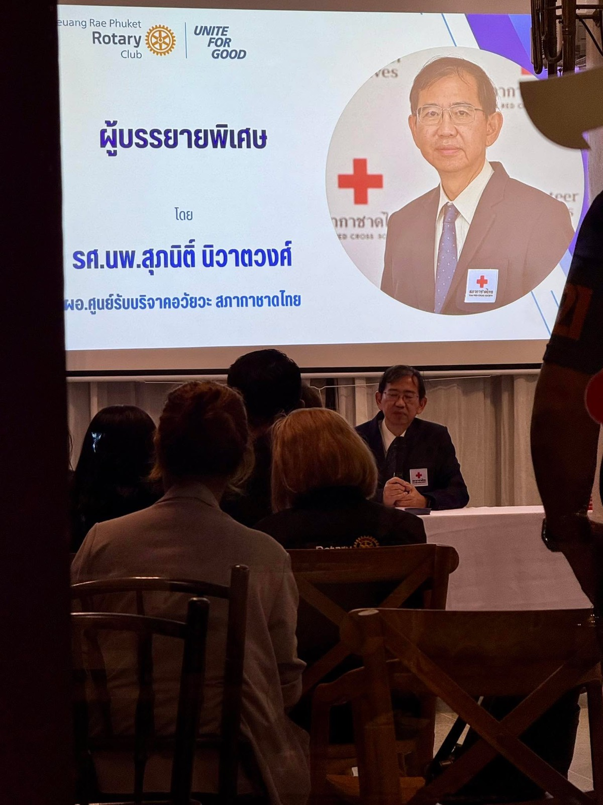
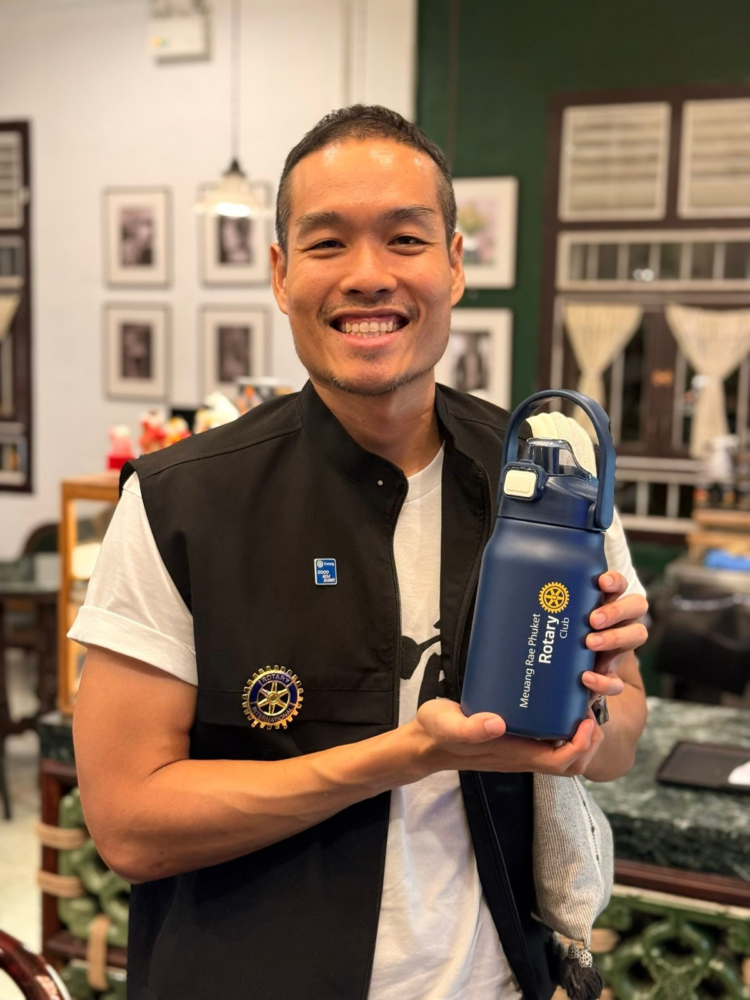

2568 · บทบาท · เหตุการณ์
โรตารีเหมืองแร่ร่วมสภากาชาดไทยจัดสัมมนาชวนบริจาคอวัยวะ


สนใจบริจาคอวัยวะ แจ้งมาได้นะครับ ❤️
โรตารีเหมืองแร่ ร่วมกับสภากาชาดไทย จัดสัมมนาให้ความรู้และเชิญชวนบริจาคอวัยวะ เพื่อนๆ คนไหนสนใจ แจ้งความประสงค์มาได้นะครับ 😇
สร้างกุศลใหม่ผู้ให้ สร้างชีวิตใหม่ผู้รับ ❤️
#โรตารีเหมืองแร่ภูเก็ต 💙
#longdaengPhuket 🧧
#tohdaengPhuket 🧧
#บ้านอาจ้อ ❤️